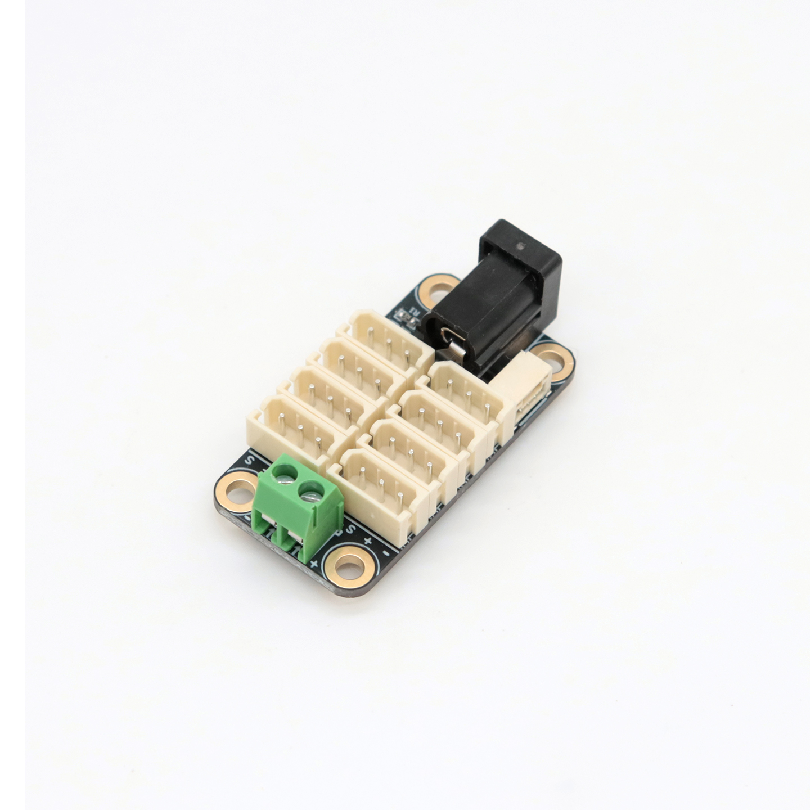
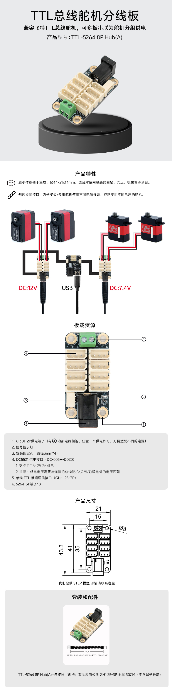
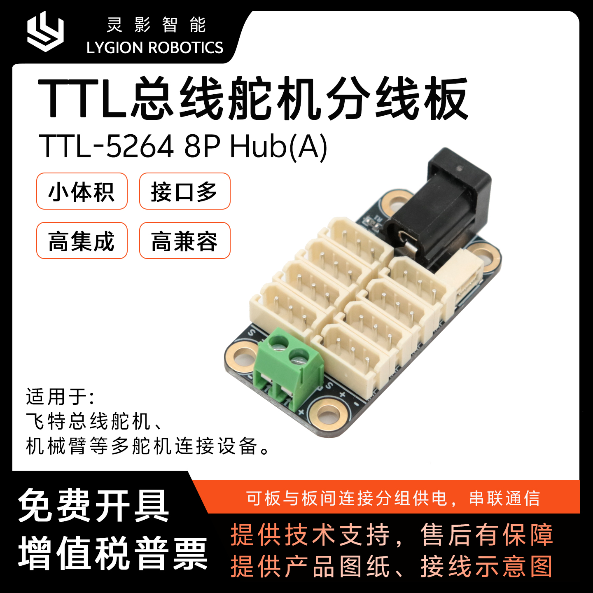
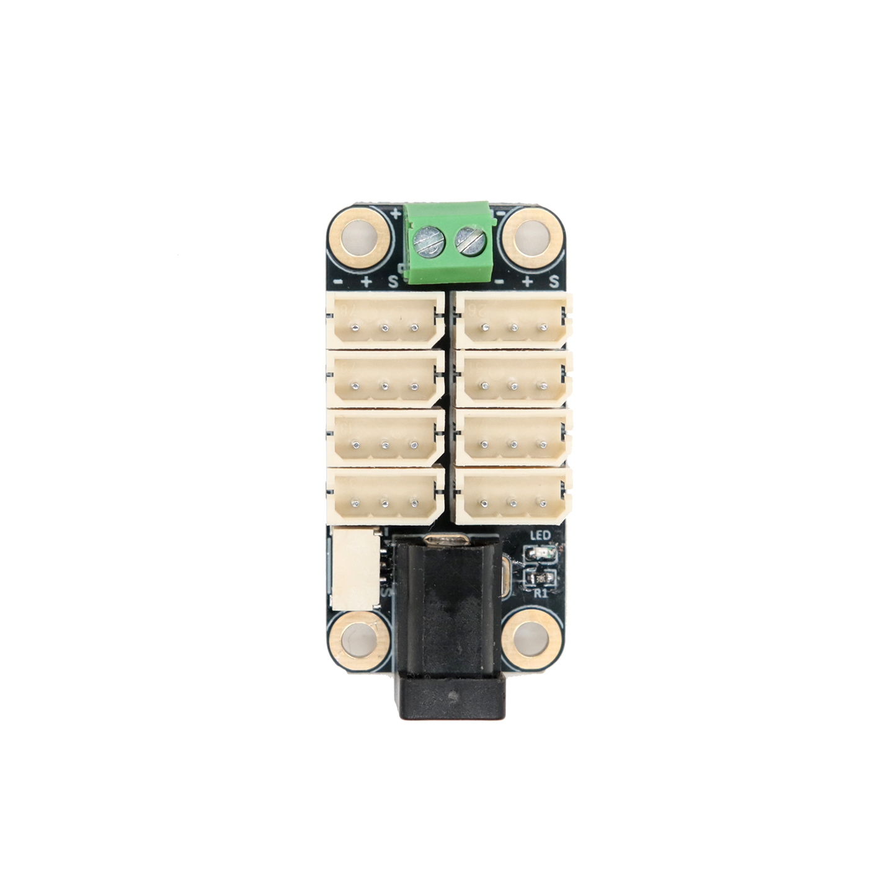
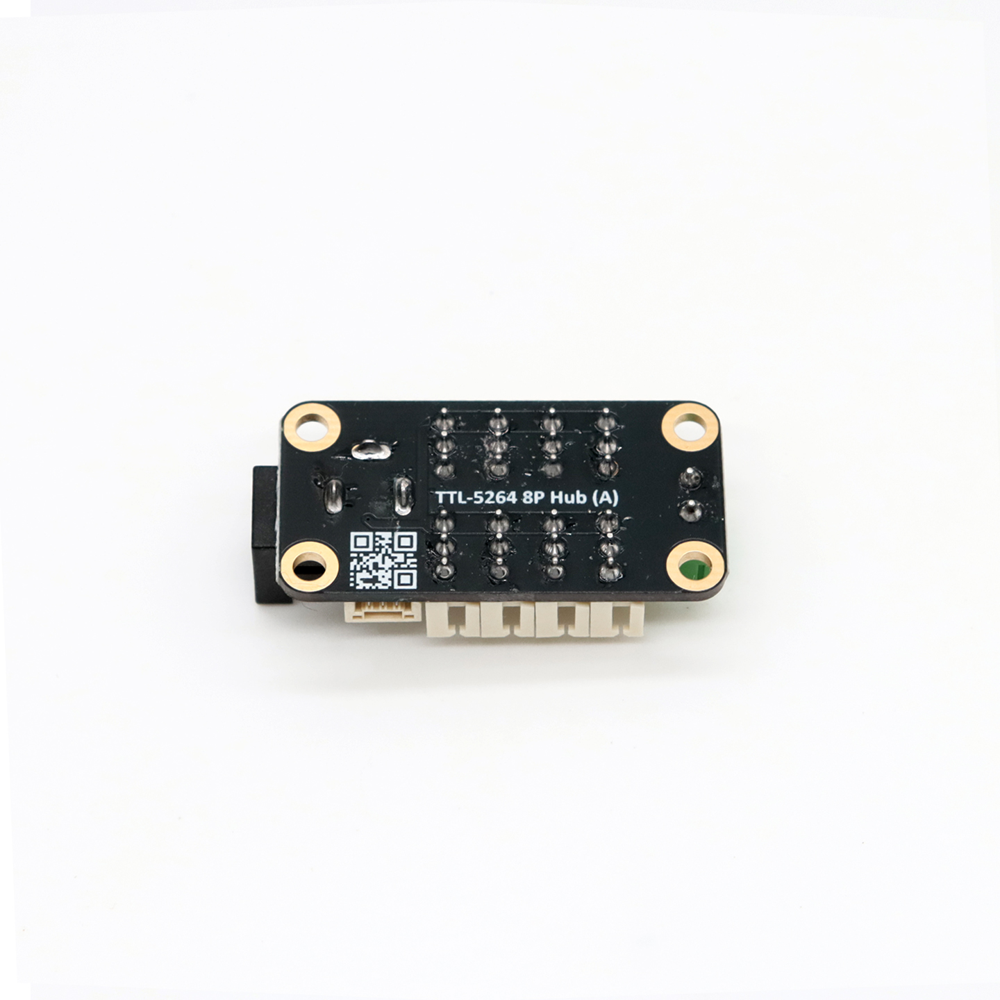

TTL bus hub board
TTL-5264 8P Hub (A)
面向 5264-3P TTL 设备的 8 路分线与供电整理板
这块 Hub 的目标很直接：把一条 TTL 总线整理成更清晰的 8 路 5264-3P 设备接口，并把供电入口、级联通信和安装结构统一放到一块小板上。它适合 Lygion 步进电机驱动板、兼容飞特总线舵机，以及其他使用 5264-3P 接口的 TTL 设备。
使用边界：Hub 只负责分线与供电分配，不做升压、降压或稳压。接入电源电压必须与所连接的舵机、关节、驱动板或轮毂电机额定电压匹配。

Product highlights
把多路 TTL 设备接线、分组供电和 Hub 级联整理到同一块板上
TTL-5264 8P Hub (A) 的价值不在复杂功能，而在于让多设备系统的布线和供电结构更可控。现有产品资料与 Wiki 说明已经覆盖了它的核心场景、接口边界和适配对象。
8 路 5264-3P 扩展
板载 8 个 5264-3P 设备接口，可把同一条 TTL 总线扩展成多路设备分支，适合步进驱动板、总线舵机和其它 5264-3P TTL 设备。
双供电入口更灵活
同时提供 DC5521 与 KF301-2P 供电入口，二者内部并联，任意一个入口接入即可，便于在不同整机结构里选择更顺手的布线方式。
支持 Hub 之间级联
板载单线 TTL 板间通信接口，适合把多块 Hub 串到同一条 TTL 信号链上，再按设备类型、电压和机械分区分别供电。
支持不同分组独立供电
多设备系统可以共用同一条 TTL 通信总线，但供电不必全部来自同一个电源。使用多块 Hub 时，可以按负载和电压需求拆分供电组。
紧凑安装结构
整板体积约 44 × 21 × 14 mm，并带 4 个约 3 mm 安装孔，适合装进机械臂、多足机器人、舵机阵列和空间有限的小型执行机构中。
适合调试与产品化集成
资料中同时提供实拍主图、详情图和 3D 结构视图，既适合前期结构评审，也适合直接用于产品页、安装说明和后续 Wiki 补充。

Board resources
板载资源已经把接口、供电与安装边界标清楚
产品详情图和 Wiki 参考页中的接口定义一致。这里将图中的编号说明整理为可检索 HTML 文本，方便后续选型、接线确认和二次文档引用。
- KF301-2P 供电端子：与 DC5521 供电口并联，任意一个供电入口接入即可，适合端子接线方式。
- DC5521 供电接口：支持 DC 5-25.2V 供电，适合常见外部电源直接接入。
- 5264-3P 接口 ×8：用于连接 5264-3P 接口的 TTL 总线设备，覆盖步进驱动板、总线舵机等典型对象。
- 单线 TTL 板间通信接口：用于多块分线板之间传递 TTL 通信信号，便于扩展更多设备分组。
- 电源指示灯：用于确认当前分线板是否已经接入电源。
- 安装孔：4 个约 3 mm 孔位，便于螺丝固定到机架、底板或支撑结构上。
供电原则：Hub 本身不做稳压。页面只转录资料中可确认的接口与电压范围，不补充未证实的线序、电流或保护策略。
Power grouping
通信总线共用，供电按设备类型、电压和负载分组
对多个 TTL 设备直接长线串接，布线简单，但在设备数量多、电流大或存在不同电压组时，维护和稳定性都不理想。TTL-5264 8P Hub (A) 更适合把通信与供电拆开管理。
步进驱动板扩展
适合把多块 TTL 总线步进电机驱动板挂到同一条信号链上，再按模组分区做供电。
总线舵机阵列
适合飞特总线舵机和兼容 5264-3P 的执行器，让多舵机接线更整齐、可维护。
多 Hub 级联
多块 Hub 可用板间通信接口级联，一条 TTL 通信总线下形成多个供电分组。
不同电压分组
不同分组可使用不同电源，但每一组的供电电压都必须匹配该组设备额定电压。
大电流设备隔离
大负载执行器建议单独成组，减少电压波动对其它低功耗设备的影响。
ID 规划要先做
同一条 TTL 总线上的设备 ID 不能重复；多板扩展前，先确认设备地址规划与 GND 连通。

适合哪些项目
机械臂、多足机器人、舵机阵列、轮毂驱动实验平台以及需要把 5264-3P TTL 设备拆成多个供电区的系统，都是这类 Hub 的典型使用场景。
如果系统需要更清晰的布线结构、减少长线串接风险，或者准备在结构内部做多板分区，这块板比简单线束分叉更适合。
Specifications
TTL-5264 8P Hub (A) 已确认参数与配套信息
| 产品型号 | TTL-5264 8P Hub (A) |
|---|---|
| 产品类型 | 面向 5264-3P 接口 TTL 总线设备的分线板 |
| 适配对象 | Lygion 步进电机驱动板、兼容飞特总线舵机，以及其他使用 5264-3P 接口的 TTL 设备 |
| 设备接口 | 5264-3P ×8 |
| 供电接口 | DC5521 与 KF301-2P，内部并联，任意一个供电入口接入即可 |
| 供电电压 | DC 5-25.2V |
| 板间通信 | 单线 TTL 板间通信接口，用于多块 Hub 级联 |
| 状态指示 | 板载电源指示灯 |
| 安装结构 | 4 个安装孔，孔径约 3 mm |
| 整板尺寸 | 约 44 × 21 × 14 mm；详情图可见 43.3 mm 总长、21 mm 总宽、15 mm 中段宽度等尺寸标注 |
| 随机线材 | 详情页标注附带连接线，规格为双头反向公头 GH1.25-3P，全黑，30 cm（不含端子长度） |
| 资料支持 | 已提供实拍图、详情图、尺寸标注与 3D 结构视图；后续可继续补充正式 Wiki 与下载入口 |
Product gallery
现有主图、实拍和 3D 视图足够覆盖选型、评审与发布场景
以下素材全部来自现有真实产品资料，保留正视、斜视、背视和宣传主图等不同视角，便于后续在商城页、使用说明和 Wiki 中复用。


Next step
可继续补充正式 Wiki 地址、接线教程和下载入口
当前页面已完成中文响应式首版，并保留官网返回入口与 Wiki 占位按钮。后续适合补正式 Wiki、供电教程跳转，以及更多应用示意图。